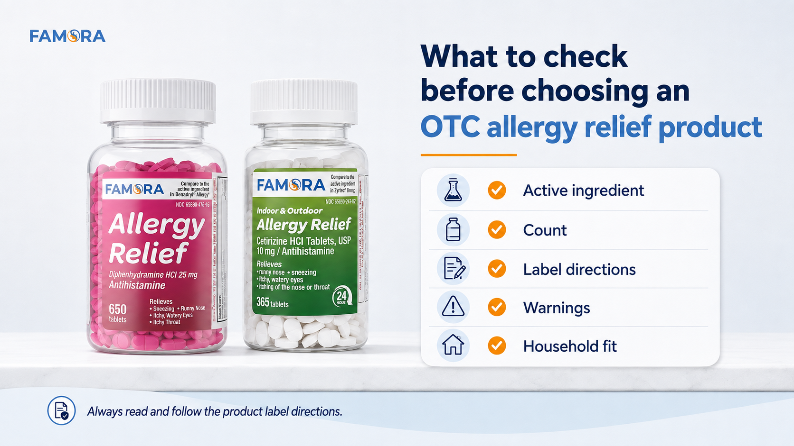

<title>Diphenhydramine vs Cetirizine: Two Allergy Relief Options — Famora</title>
<meta name="viewport" content="width=device-width, initial-scale=1" />
<!-- Google tag (gtag.js) -->
<script async src="https://www.googletagmanager.com/gtag/js?id=G-DPF7DVJCQ8"></script>
<script>
  window.dataLayer = window.dataLayer || [];
  function gtag(){dataLayer.push(arguments);}
  gtag('js', new Date());
  gtag('config', 'G-DPF7DVJCQ8');
</script>
<link rel="preconnect" href="https://fonts.googleapis.com">
<link rel="preconnect" href="https://fonts.gstatic.com" crossorigin>
<link href="https://fonts.googleapis.com/css2?family=Montserrat:wght@400;700&family=Open+Sans:wght@400;600;700&display=swap" rel="stylesheet">
<style>
  :root{
    --blue:#3786c6; --blue-deep:#1f4d73; --blue-tint:#eaf2f9;
    --orange:#fca311; --orange-deep:#e08e0a;
    --neutral:#f3f1ed; --paper:#fdfcfa; --white:#ffffff;
    --ink:#171a1d; --ink-soft:#565f66; --line:#e5e0d3;
    --display:'Montserrat','Segoe UI Semibold','Segoe UI',system-ui,sans-serif;
    --body:'Open Sans','Segoe UI',system-ui,sans-serif;
  }
  *{box-sizing:border-box;}
  html{scroll-behavior:smooth;}
  body{margin:0; background:var(--paper); color:var(--ink); font-family:var(--body); line-height:1.6; -webkit-font-smoothing:antialiased;}
  img{max-width:100%; display:block;}
  a{color:inherit;}
  .wrap{max-width:1180px; margin:0 auto; padding:0 28px;}
  h1,h2,h3{font-family:var(--display); font-weight:700; line-height:1.25; margin:0 0 14px; letter-spacing:-0.01em;}
  p{margin:0 0 16px; color:var(--ink-soft); max-width:70ch;}
  section{padding:72px 0;}

  .eyebrow{
    display:inline-flex; align-items:center; gap:9px; font-family:var(--display); font-weight:700;
    font-size:0.72rem; letter-spacing:0.13em; text-transform:uppercase; color:var(--blue-deep); margin-bottom:14px;
  }
  .eyebrow::before{content:""; width:18px; height:2px; background:var(--orange); display:inline-block; border-radius:2px;}

  .btn{
    display:inline-flex; align-items:center; gap:8px; font-family:var(--display); font-weight:700; font-size:0.9rem;
    padding:14px 26px; border-radius:9px; text-decoration:none; border:1.5px solid transparent; cursor:pointer;
    transition:transform .18s ease, box-shadow .18s ease, background .18s ease;
  }
  .btn-primary{background:var(--orange); color:#2b1a00;}
  .btn-primary:hover{background:var(--orange-deep); transform:translateY(-2px);}
  .btn-outline{border-color:var(--blue); color:var(--blue-deep); background:transparent;}
  .btn-outline:hover{background:var(--blue-tint); transform:translateY(-2px);}
  .cta-row{display:flex; gap:14px; flex-wrap:wrap; margin-top:8px;}

  /* HEADER (matches blog.html) */
  header.site{position:sticky; top:0; z-index:50; background:rgba(253,252,250,.94); backdrop-filter:blur(6px); border-bottom:1px solid var(--line);}
  .header-row{display:flex; align-items:center; justify-content:space-between; padding:16px 0; gap:24px;}
  .logo{display:flex; align-items:center; gap:2px; text-decoration:none;}
  .logo img{height:48px; width:auto; display:block;}
  nav.anchors{display:flex; gap:28px; align-items:center;}
  nav.anchors a{font-family:var(--display); font-weight:700; font-size:0.85rem; color:var(--ink-soft); text-decoration:none;}
  nav.anchors a:hover{color:var(--blue-deep);}
  nav.anchors a.current{color:var(--blue-deep);}
  .header-cta{display:flex; align-items:center; gap:14px;}
  @media (max-width:860px){ nav.anchors{display:none;} }

  /* ARTICLE HERO */
  .article-hero{padding:56px 0 40px; border-bottom:1px solid var(--line);}
  .article-hero .wrap{max-width:760px;}
  .article-hero h1{font-size:clamp(1.9rem,1.3rem+2.2vw,2.5rem);}
  .article-meta{font-family:var(--display); font-weight:700; font-size:0.82rem; color:var(--ink-soft); margin-top:2px;}
  .back-link{font-family:var(--display); font-weight:700; font-size:0.85rem; color:var(--blue-deep); text-decoration:none; display:inline-block; margin-bottom:18px;}
  .back-link:hover{text-decoration:underline;}

  /* ARTICLE BODY */
  .article-body{padding:48px 0 8px;}
  .article-body .wrap{max-width:760px;}
  .article-body h2{font-size:1.4rem; color:var(--ink); margin-top:8px;}
  .article-body h3{font-size:1.1rem; color:var(--blue-deep); margin-top:4px;}
  .article-body p{max-width:70ch;}
  .article-body a{color:var(--blue-deep); text-decoration:underline;}
  .article-list{list-style:none; margin:0 0 20px; padding:0;}
  .article-list li{position:relative; padding-left:24px; margin-bottom:16px; font-size:0.98rem; color:var(--ink-soft);}
  .article-list li::before{content:""; position:absolute; left:0; top:8px; width:8px; height:8px; border-radius:50%; background:var(--orange);}
  .article-list li strong{color:var(--ink); font-family:var(--display); font-weight:700;}
  .article-list.compact li{margin-bottom:8px;}
  .article-image{border-radius:16px; overflow:hidden; border:1px solid var(--line); box-shadow:0 16px 30px -22px rgba(23,26,29,.3); margin:32px 0;}
  .article-image img{width:100%; display:block;}

  /* FAQ (matches blog.html accordion) */
  .article-faq{border-top:1px solid var(--line); margin-top:24px; padding-top:8px;}
  .fm-faq-list{max-width:100%; margin:0; text-align:left;}
  .fm-faq-item{border-bottom:1px solid var(--line);}
  .fm-faq-q{
    width:100%; text-align:left; background:none; border:none; cursor:pointer;
    display:flex; align-items:center; justify-content:space-between; gap:16px;
    padding:18px 4px; font-family:'Montserrat',sans-serif; font-weight:700; font-size:1rem;
    color:var(--ink);
  }
  .fm-faq-q .fm-faq-icon{ flex-shrink:0; width:22px; height:22px; position:relative; }
  .fm-faq-q .fm-faq-icon::before, .fm-faq-q .fm-faq-icon::after{
    content:""; position:absolute; background:var(--blue); border-radius:2px;
    transition:transform .2s ease, opacity .2s ease;
  }
  .fm-faq-q .fm-faq-icon::before{ width:14px; height:2px; top:10px; left:4px; }
  .fm-faq-q .fm-faq-icon::after{ width:2px; height:14px; top:4px; left:10px; }
  .fm-faq-item.fm-open .fm-faq-icon::after{ transform:rotate(90deg); opacity:0; }
  .fm-faq-a{ max-height:0; overflow:hidden; transition:max-height .25s ease; }
  .fm-faq-a p{ font-size:0.95rem; line-height:1.65; padding:0 4px 20px; margin:0; }

  /* DISCLAIMER */
  .safety-box{background:var(--white); border:1px solid var(--line); border-left:4px solid var(--orange); border-radius:12px; padding:22px 26px; max-width:760px; margin:8px 0 0;}
  .safety-box p{margin:0; font-size:0.9rem;}

  /* FINAL CTA */
  .final-box{background:linear-gradient(135deg, var(--blue) 0%, var(--blue-deep) 100%); border-radius:26px; padding:64px 44px; text-align:center; color:#fff;}
  .final-box h2{color:#fff; max-width:26ch; margin:0 auto 14px;}
  .final-box p{color:#dcebf6; max-width:52ch; margin:0 auto 28px;}

  /* FOOTER (matches blog.html) */
  footer.site{background:var(--ink); color:#c7ccd1; padding:48px 0 28px;}
  .footer-grid{display:flex; justify-content:space-between; gap:32px; flex-wrap:wrap; padding-bottom:26px; border-bottom:1px solid #33383d;}
  .footer-logo img{height:40px; width:auto; display:block;}
  .footer-links{display:flex; gap:26px; flex-wrap:wrap;}
  .footer-links a{font-size:0.88rem; text-decoration:none; color:#c7ccd1;}
  .footer-links a:hover{color:var(--orange);}
  .footer-bottom{display:flex; justify-content:space-between; gap:16px; flex-wrap:wrap; padding-top:22px; font-size:0.78rem; color:#8a9096;}

  @media (max-width:640px){
    section{padding:48px 0;}
    .final-box{padding:44px 24px;}
    .wrap{padding:0 20px;}
  }
</style>

<header class="site">
  <div class="wrap header-row">
    <a class="logo" href="index.html"></a>
    <nav class="anchors">
      <a href="index.html#products" data-ga="product_section" data-cta-location="nav">Products</a>
      <a href="index.html#why-famora">Why Famora</a>
      <a href="blog.html" class="current">Blog</a>
      <a href="index.html#faq">FAQ</a>
    </nav>
    <div class="header-cta">
      <a class="btn btn-primary" href="https://www.amazon.com/stores/Famora/page/81160919-0D2F-41D2-94BA-65BB7147068E?lp_asin=B0GWS1F7XH&ref_=ast_bln" target="_blank" rel="noopener" data-ga="storefront" data-cta-location="header">Shop Amazon</a>
    </div>
  </div>
</header>

<main>

  <!-- ARTICLE HERO -->
  <section class="article-hero">
    <div class="wrap">
      <a class="back-link" href="blog.html">&larr; Back to Blog</a>
      <div class="eyebrow">Allergy Relief</div>
      <h1>Diphenhydramine vs Cetirizine: Two Allergy Relief Options, Different Use Cases</h1>
      <p class="article-meta">Famora &middot; August 18, 2026</p>
    </div>
  </section>

  <!-- ARTICLE BODY -->
  <section class="article-body">
    <div class="wrap">

      <p>When shoppers compare over-the-counter allergy medicine, two active ingredients often come up: diphenhydramine and cetirizine. Both are antihistamines, and both are commonly used in allergy relief products, but they are not the same ingredient.</p>

      <p>That is why a smart comparison should not start with &ldquo;which one is better?&rdquo; A better question is: what product details should I review before choosing an OTC allergy relief option for my household?</p>

      <p>Famora currently offers two practical allergy relief options:</p>

      <ul class="article-list">
        <li><strong>Famora Allergy Relief 25 mg Diphenhydramine HCl &mdash; 650 caplets</strong></li>
        <li><strong>Famora 24-Hour Allergy Relief Cetirizine HCl 10 mg &mdash; 365 tablets</strong></li>
      </ul>

      <p>Both products are part of Famora&rsquo;s OTC essentials lineup, but each has different product details, active ingredients, counts, and label directions. Before choosing either one, shoppers should review the label carefully and consider what fits their household needs.</p>

      <h2>Start With the Active Ingredient</h2>
      <p>The first thing to compare is the active ingredient.</p>
      <p>Diphenhydramine HCl 25 mg is an antihistamine active ingredient used in many OTC allergy relief products. Famora Allergy Relief 25 mg contains diphenhydramine HCl 25 mg and comes in a 650-count format. It is positioned as a high-count allergy relief option for households that want common OTC essentials available at home.</p>
      <p>Cetirizine HCl 10 mg is also an antihistamine active ingredient. Famora 24-Hour Allergy Relief contains cetirizine HCl 10 mg and comes in a 365-tablet format. It is positioned as a 24-hour allergy relief option for shoppers reviewing allergy relief medicine for everyday household preparedness.</p>
      <p>The goal of comparing diphenhydramine vs cetirizine is not to decide based on one headline or one claim. The goal is to understand that these are two different antihistamine tablets, then review the product label, warnings, directions, and Amazon product details before buying.</p>

      <h2>Compare the Product Format and Count</h2>
      <p>Another practical difference is the count per bottle.</p>
      <p>Famora Allergy Relief 25 mg Diphenhydramine HCl comes in a 650-count format. Famora 24-Hour Allergy Relief Cetirizine HCl 10 mg comes in a 365-tablet format.</p>
      <p>For many households, count matters because OTC essentials are often restocked only after they are needed. A high-count format can help shoppers think ahead and keep commonly used medicine cabinet essentials available at home.</p>
      <p>Still, count should not be the only factor. A larger bottle does not automatically mean it is the right product for every household. Shoppers should compare the active ingredient, label directions, warnings, and intended household fit before choosing any over-the-counter allergy medicine.</p>

      <h2>Review the Label Directions Carefully</h2>
      <p>With any OTC allergy medicine, the product label should guide the decision.</p>
      <p>An OTC Drug Facts label includes important information such as active ingredient, purpose, uses, warnings, directions, and other product details. The FDA provides a helpful overview of how these labels are structured in its guide to <a href="https://www.fda.gov/drugs/understanding-over-counter-medicines/over-counter-drug-facts-label" target="_blank" rel="noopener">The Over-the-Counter Drug Facts Label</a>.</p>
      <p>When comparing allergy relief medicine, shoppers should review:</p>

      <ul class="article-list compact">
        <li>Active ingredient</li>
        <li>Purpose</li>
        <li>Uses</li>
        <li>Directions</li>
        <li>Warnings</li>
        <li>Age guidance</li>
        <li>Storage information</li>
        <li>When to ask a doctor or pharmacist</li>
      </ul>

      <p>This is especially important when comparing antihistamine tablets because different active ingredients may have different directions, warnings, and usage guidance.</p>
      <p>Famora&rsquo;s responsible-use position is simple: always read and follow the product label directions. If you are unsure whether a product is right for you or your household, ask a healthcare professional.</p>

      <div class="article-image">
        
      </div>

      <h2>Think About Household Fit</h2>
      <p>A product comparison should also include household fit.</p>
      <p>Some shoppers are looking for allergy relief medicine to keep in a medicine cabinet during allergy season. Others may be comparing products before restocking. Some may be searching specifically for cetirizine 10mg, while others may be looking for diphenhydramine 25mg.</p>
      <p>A practical household comparison may include questions like:</p>

      <ul class="article-list compact">
        <li>Which active ingredient am I looking for?</li>
        <li>What symptoms are listed on the product label?</li>
        <li>What is the count per bottle?</li>
        <li>Who in the household may use this product?</li>
        <li>What does the label say about age guidance?</li>
        <li>Are there warnings I need to review?</li>
        <li>Is this product available through a trusted Amazon listing?</li>
      </ul>

      <p>These questions help shoppers make a more informed choice without turning the decision into guesswork.</p>

      <h2>Diphenhydramine vs Cetirizine: A Simple Famora Comparison</h2>
      <p>Here is a simple way to compare Famora&rsquo;s two allergy relief options.</p>

      <h3>Famora Allergy Relief 25 mg Diphenhydramine HCl</h3>
      <p>This product contains diphenhydramine HCl 25 mg and comes in a 650-count format. It is an OTC antihistamine option for common allergy symptoms listed on the product label, including sneezing, runny nose, itchy/watery eyes, and itching of the nose or throat.</p>

      <h3>Famora 24-Hour Allergy Relief Cetirizine HCl 10 mg</h3>
      <p>This product contains cetirizine HCl 10 mg and comes in a 365-tablet format. It is positioned as a 24-hour allergy relief option and is also used for common allergy symptoms listed on the product label, including sneezing, runny nose, itchy/watery eyes, and itching of the nose or throat.</p>

      <p>Both products belong to the broader allergy relief category, but they are built around different active ingredients and product details. That is why shoppers should compare the basics before choosing.</p>

      <h2>Where Amazon Fits Into the Decision</h2>
      <p>For many shoppers, Amazon is part of the OTC shopping process. It gives people a place to review product images, active ingredients, count, label-style details, and product information before adding an item to their cart.</p>
      <p>Famora products are available through the Famora Amazon Storefront, where shoppers can review the current OTC essentials lineup.</p>
      <p>Before purchasing any OTC medicine on Amazon, take a moment to review the product title, active ingredient, count, product images, label details, directions, warnings, and whether the product fits your household needs.</p>

      <h2>Final Takeaway</h2>
      <p>Diphenhydramine and cetirizine are both common antihistamine ingredients used in OTC allergy medicine, but they are different products with different label details.</p>
      <p>The best next step is not to choose based on habit alone. It is to compare the basics.</p>
      <p>Review the active ingredient. Check the count. Read the label directions. Understand the warnings. Consider your household needs. Then choose the Famora product that fits what you are looking for.</p>
      <p>Famora keeps OTC shopping practical by offering clear, high-count household essentials through Amazon. Always read and follow the product label directions.</p>

      <!-- FAQ -->
      <div class="article-faq">
        <h2>FAQ</h2>
        <div class="fm-faq-list" id="cfaq-list">

          <div class="fm-faq-item">
            <button class="fm-faq-q" id="cfaq-q-1" aria-expanded="false" aria-controls="cfaq-a-1"><span>What is the main difference between diphenhydramine and cetirizine?</span><span class="fm-faq-icon" aria-hidden="true"></span></button>
            <div class="fm-faq-a" id="cfaq-a-1" role="region" aria-labelledby="cfaq-q-1"><p>They are different antihistamine active ingredients. Shoppers should compare the product label, directions, warnings, and product details before choosing.</p></div>
          </div>

          <div class="fm-faq-item">
            <button class="fm-faq-q" id="cfaq-q-2" aria-expanded="false" aria-controls="cfaq-a-2"><span>Is cetirizine 10mg the same as diphenhydramine 25mg?</span><span class="fm-faq-icon" aria-hidden="true"></span></button>
            <div class="fm-faq-a" id="cfaq-a-2" role="region" aria-labelledby="cfaq-q-2"><p>No. Cetirizine HCl 10 mg and diphenhydramine HCl 25 mg are different active ingredients with different label directions.</p></div>
          </div>

          <div class="fm-faq-item">
            <button class="fm-faq-q" id="cfaq-q-3" aria-expanded="false" aria-controls="cfaq-a-3"><span>Should I choose an allergy relief product based only on count?</span><span class="fm-faq-icon" aria-hidden="true"></span></button>
            <div class="fm-faq-a" id="cfaq-a-3" role="region" aria-labelledby="cfaq-q-3"><p>No. Count is useful, but shoppers should also review the active ingredient, directions, warnings, and household fit.</p></div>
          </div>

          <div class="fm-faq-item">
            <button class="fm-faq-q" id="cfaq-q-4" aria-expanded="false" aria-controls="cfaq-a-4"><span>What should I check before buying OTC allergy medicine on Amazon?</span><span class="fm-faq-icon" aria-hidden="true"></span></button>
            <div class="fm-faq-a" id="cfaq-a-4" role="region" aria-labelledby="cfaq-q-4"><p>Review the active ingredient, product count, label details, warnings, directions, and whether the product fits your household needs.</p></div>
          </div>

          <div class="fm-faq-item">
            <button class="fm-faq-q" id="cfaq-q-5" aria-expanded="false" aria-controls="cfaq-a-5"><span>What should I do before using any OTC allergy medicine?</span><span class="fm-faq-icon" aria-hidden="true"></span></button>
            <div class="fm-faq-a" id="cfaq-a-5" role="region" aria-labelledby="cfaq-q-5"><p>Always read and follow the product label directions. Ask a healthcare professional if you have questions.</p></div>
          </div>

        </div>
      </div>

      <script>
      (function(){
        var list = document.getElementById('cfaq-list');
        if (!list || list.getAttribute('data-fm-bound')) return;
        list.setAttribute('data-fm-bound', 'true');
        list.querySelectorAll('.fm-faq-item').forEach(function(item){
          var btn = item.querySelector('.fm-faq-q');
          var answer = item.querySelector('.fm-faq-a');
          btn.addEventListener('click', function(){
            var isOpen = item.classList.contains('fm-open');
            list.querySelectorAll('.fm-faq-item.fm-open').forEach(function(open){
              if (open !== item){
                open.classList.remove('fm-open');
                open.querySelector('.fm-faq-a').style.maxHeight = null;
                open.querySelector('.fm-faq-q').setAttribute('aria-expanded', 'false');
              }
            });
            if (isOpen){
              item.classList.remove('fm-open');
              answer.style.maxHeight = null;
              btn.setAttribute('aria-expanded', 'false');
            } else {
              item.classList.add('fm-open');
              answer.style.maxHeight = answer.scrollHeight + 'px';
              btn.setAttribute('aria-expanded', 'true');
            }
          });
        });
      })();
      </script>

      <div class="safety-box" style="margin-top:32px;">
        <p>This content is for general educational purposes only and is not medical advice. Always read and follow product label directions.</p>
      </div>

    </div>
  </section>

  <!-- FINAL CTA -->
  <section style="padding-top:8px;">
    <div class="wrap">
      <div class="final-box">
        <h2>Stock Your Home With Practical OTC Essentials</h2>
        <p>Explore Famora Allergy Relief and everyday OTC essentials available through Amazon.</p>
        <a class="btn btn-primary" href="https://www.amazon.com/stores/Famora/page/81160919-0D2F-41D2-94BA-65BB7147068E?lp_asin=B0GWS1F7XH&ref_=ast_bln" target="_blank" rel="noopener" data-ga="storefront" data-cta-location="final_cta">Shop Famora on Amazon</a>
      </div>
    </div>
  </section>

</main>

<footer class="site">
  <div class="wrap">
    <div class="footer-grid">
      <div class="footer-logo"></div>
      <div class="footer-links">
        <a href="https://www.amazon.com/stores/Famora/page/81160919-0D2F-41D2-94BA-65BB7147068E?lp_asin=B0GWS1F7XH&ref_=ast_bln" target="_blank" rel="noopener" data-ga="storefront" data-cta-location="footer">Amazon Storefront</a>
        <a href="https://www.amazon.com/dp/B0GX2DV5KT" target="_blank" rel="noopener" data-ga="cetirizine" data-cta-location="footer">Cetirizine</a>
        <a href="https://www.amazon.com/dp/B0H3WXW44D" target="_blank" rel="noopener" data-ga="aspirin" data-cta-location="footer">Aspirin</a>
        <a href="https://www.amazon.com/dp/B0GWS1F7XH" target="_blank" rel="noopener" data-ga="diphenhydramine" data-cta-location="footer">Diphenhydramine</a>
        <a href="blog.html">Blog</a>
        <a href="legal-notice.html">Legal Notices</a>
      </div>
    </div>
    <div class="footer-bottom">
      <p style="margin:0; max-width:52ch; color:#8a9096;">Always read and follow the product label directions. Review warnings, dosage instructions, and age guidance before use. If you have questions about whether a product is right for you, consult a healthcare professional.</p>
      <span>&copy; Famora. All rights reserved.</span>
    </div>
  </div>
</footer>

<script>
(function(){
  if (window.__fmAnalyticsBound) return;
  window.__fmAnalyticsBound = true;

  var PRODUCTS = {
    diphenhydramine: { event: 'diphenhydramine_click', product_name: 'Diphenhydramine', asin: 'B0GWS1F7XH' },
    cetirizine:      { event: 'cetirizine_click',      product_name: 'Cetirizine',      asin: 'B0GX2DV5KT' },
    aspirin:         { event: 'aspirin_click',         product_name: 'Aspirin',         asin: 'B0H3WXW44D' }
  };

  function fireGtag(name, params){
    if (typeof gtag === 'function') gtag('event', name, params);
  }

  document.querySelectorAll('[data-ga]').forEach(function(el){
    el.addEventListener('click', function(){
      var key = el.getAttribute('data-ga');
      var base = {
        cta_text: el.textContent.trim(),
        cta_location: el.getAttribute('data-cta-location') || '',
        page_location: window.location.href
      };
      if (key === 'storefront'){
        fireGtag('amazon_storefront_click', Object.assign({}, base, { destination_url: el.href }));
      } else if (key === 'product_section'){
        fireGtag('product_section_click', base);
      } else if (PRODUCTS[key]){
        var p = PRODUCTS[key];
        fireGtag(p.event, Object.assign({}, base, {
          destination_url: el.href,
          product_name: p.product_name,
          asin: p.asin
        }));
      }
    });
  });

  var scroll75Fired = false;
  function checkScroll75(){
    if (scroll75Fired) return;
    var doc = document.documentElement;
    var scrollableHeight = doc.scrollHeight - window.innerHeight;
    if (scrollableHeight <= 0) return;
    var pct = (window.scrollY / scrollableHeight) * 100;
    if (pct >= 75){
      scroll75Fired = true;
      fireGtag('scroll_75', {
        percent_scrolled: 75,
        page_title: document.title,
        page_location: window.location.href
      });
      window.removeEventListener('scroll', checkScroll75);
    }
  }
  window.addEventListener('scroll', checkScroll75, { passive: true });
})();
</script>
